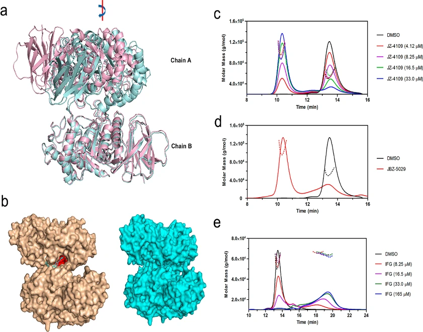
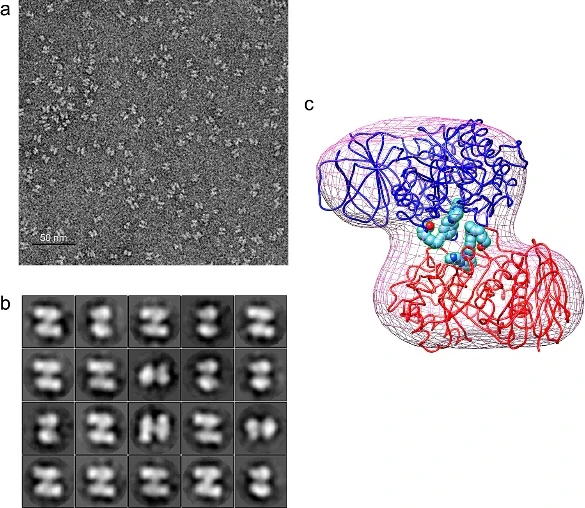
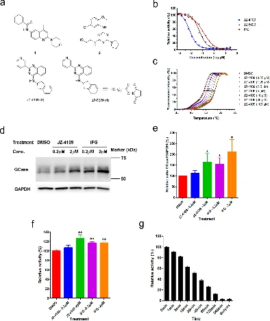

Context
β-Glucocerebrosidase (GCase) is a lysosomal enzyme linked to Gaucher's disease and Parkinson's disease. Dr. Silverman's team designed small-molecule modulators; the project needed structural insight into how they act.
I contributed cryo-EM and crystallography across the program, helping the team see how modulators engage GCase and promote dimerization.
What I did
- Solved GCase structures in the presence and absence of modulator series.
- Used cryo-EM and crystallography to identify an allosteric binding site.
- Supported the team's optimization cycle with structural feedback over multiple years.
- Helped connect the dimerization mechanism to the measured activity increase.
Key results
- Program duration
- 3 yearsIterative structural optimization
- Activity increase
- ~100%Reported by the team
- Allosteric site
- 1Modulator binding site
- The modulators promote GCase dimerization through an allosteric site.
- The structural work guided the optimization of the candidate series.
- The program advanced toward translation and contributed to the launch of Vanqua Bio.
Figures



Collaborators

Dr. Richard B. Silverman
Principal Investigator
Northwestern University
Dr. Jianbin Zheng
GCase biology collaborator
Northwestern University

Dr. Dimitri Krainc
Clinical and translational collaborator
Northwestern University
Dr. Boguslaw Nocek
Crystallography collaborator
Loyola University Chicago
Output
Source and disclosure. High-level summary from Dr. Zheng's April 2024 research summary. Some structural data were part of an unpublished translational program; confirm disclosure permissions before reuse.